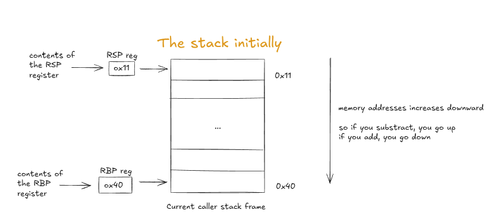
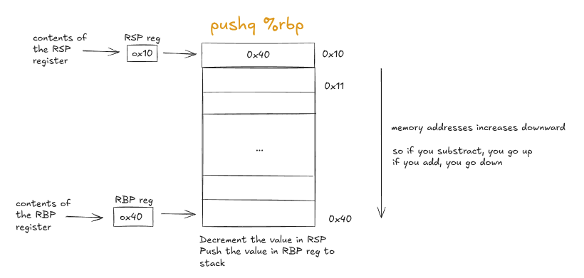
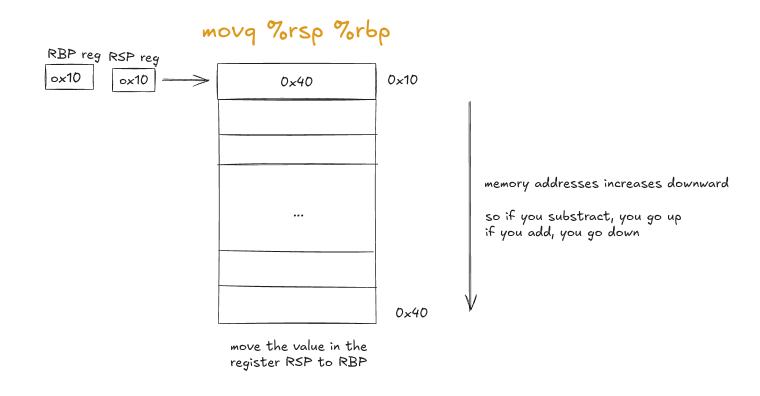
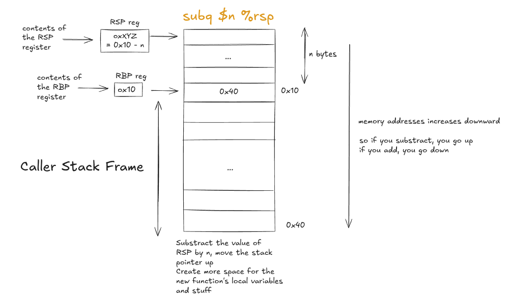
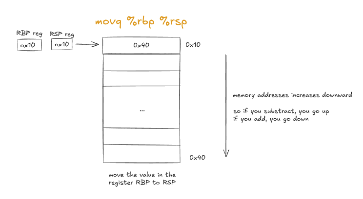
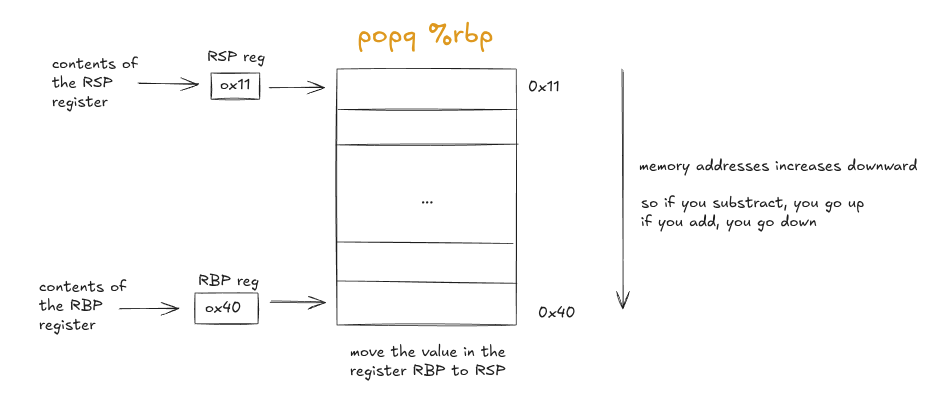
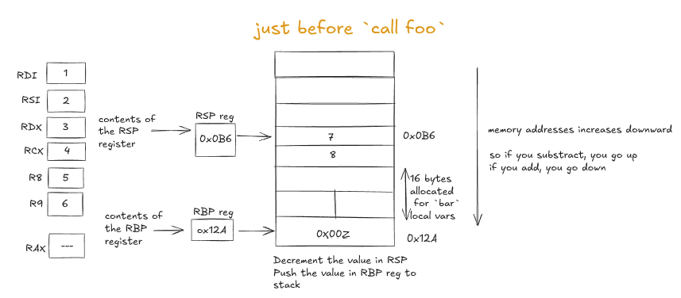
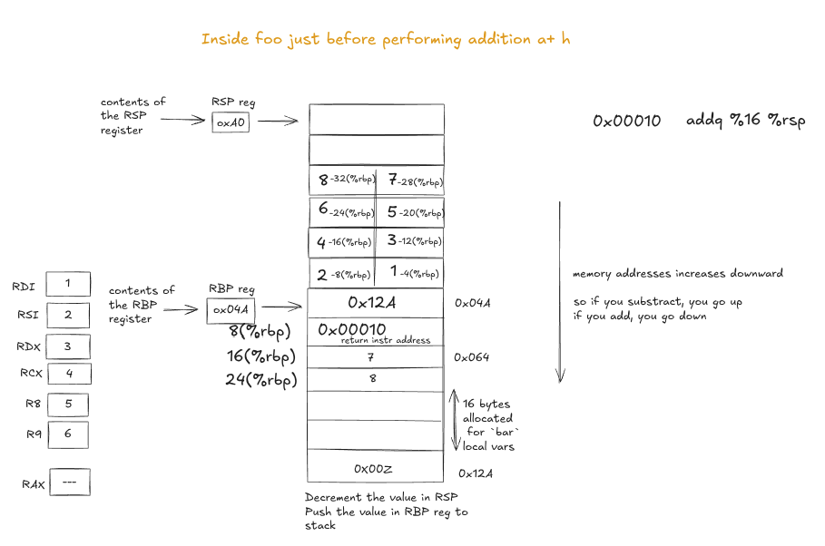
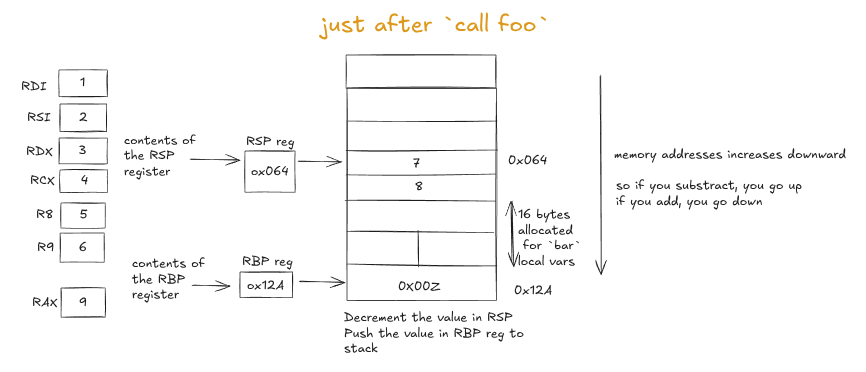

Getting Started
int main() {
return ~(-70);
}
.globl main
main:
pushq %rbp
movq %rsp, %rbp
# needs to be double word aligned, so 16 bytes
subq $16, %rsp
# highly inefficient/unoptimized, but just used to illustrate an example
# modern compilers would optimize this away...
# this part is obvious... doing ~(-70)
movl $70, -4(%rbp)
negl -4(%rbp)
movl -4(%rbp), %r10d
movl %r10d, -8(%rbp)
notl -8(%rbp)
movl -8(%rbp), %eax
movq %rbp, %rsp
popq %rbp
ret
.section .note.GNU-stack, "",@progbits
RSP register (64-bit Stack Pointer) points to the top of the stack. It grows to lower memory addresses as data is pushed onto the stack. In many books, it shown growing upwards, but in reality, it grows downwards. RBP register (64-bit Base Pointer) points to the base of the current caller’s stack frame.
The RAX register is a register used to store return values from functions. The lower 32 bits of RAX is called EAX. When a function returns an 32-bit integer value, it is typically placed in the EAX register.

// function prologue
pushq %rbp
movq %rsp, %rbp
subq $8, %rsp


subq $8, %rsp: The stack frame now has 8 bytes of space allocated for local and temporary variables

// function epilogue
movq %rbp, %rsp
popq %rbp
ret


Getting Deeper
// callee: getting called by other func `bar`
int foo(int a, int b, int c, int d, int e, int f, int g, int h) {
return a + h;
}
// caller: calls other functions, here `foo`
int bar(int arg) {
return arg + foo(1, 2, 3, 4, 5, 6, 7, 8);
}
THe first six integer arguments to functions are passed using registers in the following order:
- RDI (EDI for 32-bit)
- RSI (ESI for 32-bit)
- RDX (EDX for 32-bit)
- RCX (ECX for 32-bit)
- R8 (R8D for 32-bit)
- R9 (R9D for 32-bit)
Any additional arguments beyond the first six are passed on the stack.
# This code is produced by my nanocc compiler, no optimizations, so too many unnecessary moves, but that's okay ig...
.globl foo
foo:
pushq %rbp
movq %rsp, %rbp
subq $48, %rsp
# `foo` might call other functions (it doesn't here, but just in case), so save the registers on to the stack
movl %edi, -4(%rbp) # 4-bit registers, so gap is 4 between successive elements in stack
movl %esi, -8(%rbp)
movl %edx, -12(%rbp)
movl %ecx, -16(%rbp)
movl %r8d, -20(%rbp)
movl %r9d, -24(%rbp)
# stack args are at positive offsets from rbp
# <|@@@@@@|> 8(%rbp) contains the instruction pointer to return to after `foo` finishes
# stack args start from 16(%rbp), at 8-byte intervals: 16(%rbp), 24(%rbp), (if more) 32(%rbp), etc.
# now place them into the local stack frame of `foo`
movl 16(%rbp), %r10d # pushq uses 8 bytes
movl %r10d, -28(%rbp)
movl 24(%rbp), %r10d # 24 - 16 = 8 # stack args
movl %r10d, -32(%rbp)
# |$$$$$$| <before the "# do the actual work" line, stack * Inside `foo`, just before performing the addition `a + h`:>
# do the actual work
movl -4(%rbp), %r10d
movl %r10d, -36(%rbp)
movl -32(%rbp), %r10d
addl %r10d, -36(%rbp)
movl -36(%rbp), %eax
movq %rbp, %rsp
popq %rbp
# <|@@@@@@|> pop the return address into RIP (instruction pointer)
ret
.section .note.GNU-stack, "",@progbits
.globl bar
bar:
pushq %rbp
movq %rsp, %rbp
# doesn't take it account the fact that `foo` needs stack space for its local variables
# ONLY FOR IT'S OWN LOCAL VARIABLES
# -4(%rbp) | -8(%rbp) | -12(%rbp) | -16(%rbp) padded for `bar`
subq $16, %rsp
# `bar` might call other functions (it calls `foo` here), so save the registers on to the stack
movl %edi, -4(%rbp)
# pass arguments to `foo` by putting them in the appropriate registers/stack locations
movl $1, %edi
movl $2, %esi
movl $3, %edx
movl $4, %ecx
movl $5, %r8d
movl $6, %r9d
# pushq: decrement rsp, then place it at rsp
pushq $8 # pushq takes 64-bit values
pushq $7 # that's why "gap" between `7` and `8` will 8 bytes in memory
# |$$$$$$| <before function call, stack # * Before calling `foo` from `bar`:>
# Two things happen when a `call` instruction is executed:
# 1.) Pushes the value of RIP (instruction pointer: points to next instruction to be executed) register onto the stack
# 2.) Transfers control to the called function by setting RIP to the address of the called function
call foo
# |$$$$$$| <after function call, stack* After `foo` has returned to `bar`:>
addq $16, %rsp # clean up, stack args passed using `pushq`
# function return value is now in %eax
movl %eax, -8(%rbp)
movl -4(%rbp), %r10d
movl %r10d, -12(%rbp)
movl -8(%rbp), %r10d
addl %r10d, -12(%rbp)
movl -12(%rbp), %eax
movq %rbp, %rsp
popq %rbp
ret
.section .note.GNU-stack, "",@progbits
Let’s visualize the stack at three key points:
Don’t take the address values too seriously, they might not add up exactly
|$$$$$$|Before callingfoofrombar:
|$$$$$$|Insidefoo, just before performing the additiona + h:
|$$$$$$|Afterfoohas returned tobar: